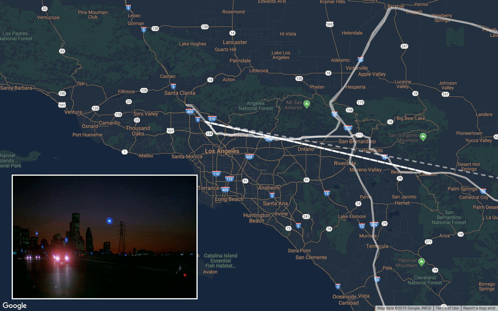
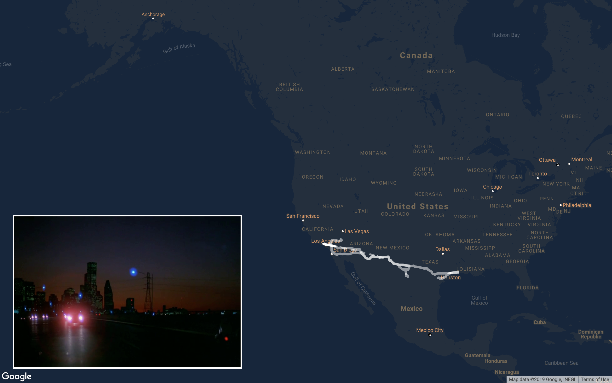
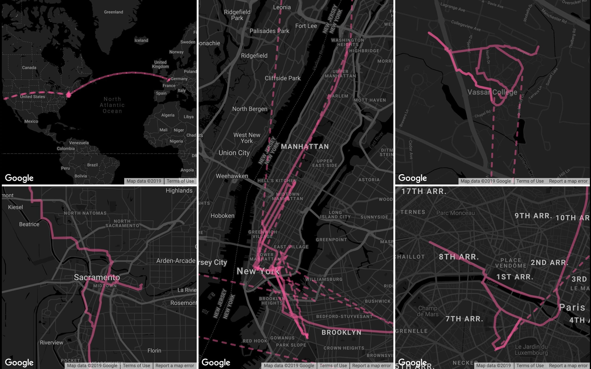

CINEPATH
Cinepath is a browser-based visualization interface for cinematic film locations. This is my independent study project for art and design minor with Professor Ben Grosser and a personal voyage of cinema in terms of the interdisciplinary studies with cinema and data visualization. At the same time, it’s an appreciation and an open invitation to the real cinema that hopefully brings spatial awareness to both city dwellers and virtual flâneurs for reexamining themselves through the cinematic lens.
BEFORE SUNRISE
GITHUB

Paris, Texas, Directed by Wim Wenders, 1984
IDEATION
As a cinephile and an avid traveler, the way I learn about unfamiliar places and people and ultimately attempt to understand the world, is through the lens of cinematography. Both academically and personally, these interests have led me to ponder: how do filmmakers choose the locations to shoot? Where are those film locations in real life? And how would the visualization of the patterns be like through mapping between fiction and reality?
I was inspired by a YouTube Video which mapped the opening scene of Baby Driver. However, instead of making a video with tools much as Adobe After Effects to animate all the routes, I had this visualization automaton in mind which uses webpages as the medium and allows user interactions to explore the map online.
DATASET
The most time-consuming process for Cinepath is to go through each film, breaking down a movie frame by frame to get actual timestamps, then researching the real filming locations. I used a multitude of resources: original scripts, director’s commentary, Internet Movie Database, other cinephile’s film location blogs, and even Google Maps Street Views as a cross-referencing tool.
However, as I dive deep into research, I found out that directors would intentionally choose their film locations that may not add up to the plots but serves either personal or atmospheric purposes. For instance, the director Wenders revealed in his commentary for Paris, Texas that he chose to film in a byway town just because of its same name with his grandfather.
IMPLEMENTATION
Now we have coordinates, but how can we show the movement from point A to point B?
I’ve seen several visualizations online like this Google Maps Animation with all the coordinates along the way and connected by straight lines. When the number of dots is large enough, it creates smooth turns with Json. However, Online Google Maps API Documentation has been extremely helpful resources to request a route with specific transportation method varied from walking to public transportation. I wrote codes in JavaScript using Google Maps API as the generic method of visualization. Finally, I designed map layouts and customized colors based on the theme of and my emotional response to the film itself.
PROTOTYPE
PARIS, TEXAS
 
The way I see road films as poetry to America was deeply influenced by Paris, Texas (1984) directed by Wim Wenders. It’s fascinating to just watch protagonists driving back and forth between Texas and California as the scenery unfolds: gas stations, motels, diners, and the neon signs. The intention is to not only map all these places frame by frame, but also analyze the dynamic geographical movements that could evoke the viewer's experience of moving through space. As for the layout, I made a design choice to only have one map of the Southeastern part of the United States and create an overlay that covered additional sea areas to play snapshots of the film to get audiences a geographical sense of the places when a 145-min film shrinking into 30 seconds.
FRANCES HA

Comparatively, Frances Ha (2013) by Noah Baumbach is a more recent production takes places mostly in New York City. There was also a fair amount of travels in this film where the protagonist visited Sacramento, Paris and Upstate New York. Since there were multiple places, the decision is to have maps for each of the location with an additional world map to get a big picture. Styling in black and white fashion is to appreciate the film visuals and the choice of pink lines refers to the posters. In another sense, film productions provide a new type of landmarks for tourists when a place was given a new meaning in the cinematic world, turning the mundanity into imaginative experience. Phenomenally these places become new attractions for movie-goers to take pictures, but could it also be something problematic?
IMPROVEMENTS
To further understand a director's film locations throughout their career, more data visualizations could be created on one film director, to better analyze their moving patterns, interests of certain regions and transportation preferences throughout their career.
Technically, the data collection process could also be optimized with deep-learning programs to recognize locations by video processing to extract frames in the film, In this way, it could reduce the time and efforts to generate more visualizations with the utilization of a back-end database.
I would also further investigate how “cinematic tourism” has created new types of urban landmarks and reshaped the cultural landscape. How does our physical experience of a place alter if we first experience it in a film? How the constructed cinematic experience could affect our memory and meaning of place and space? Could it change the way we re-examine the mundanity of life or grow desires in those who dream of exploring?

Frances Ha, Directed by Noah Baumbach, 2013
ACKNOWLEDGEMENT
Special thanks to Ben Grosser, a professor in New Media at University of Illinois at Urbana-Champaign, who has been the best advisor that guided me throughout this project and encouraged me to think beyond the traditional method.
To my dearest friend Gail Cheng from University of Florida, who helped me out of her way by repeatedly watching B&W Frances Ha on Netflix and matching storefronts on Google Street View.
And to all my friends who offered aesthetic suggestions and technical supports, I couldn’t create this prototype without them.
REFERENCES